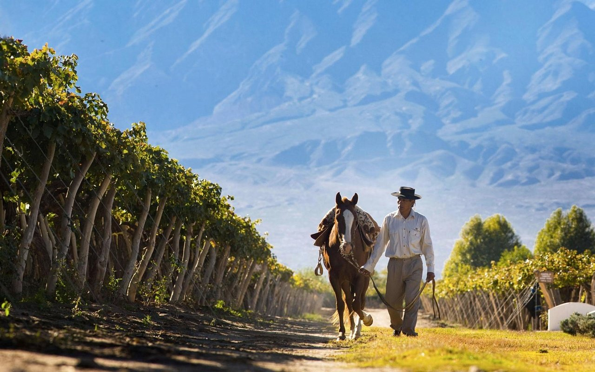
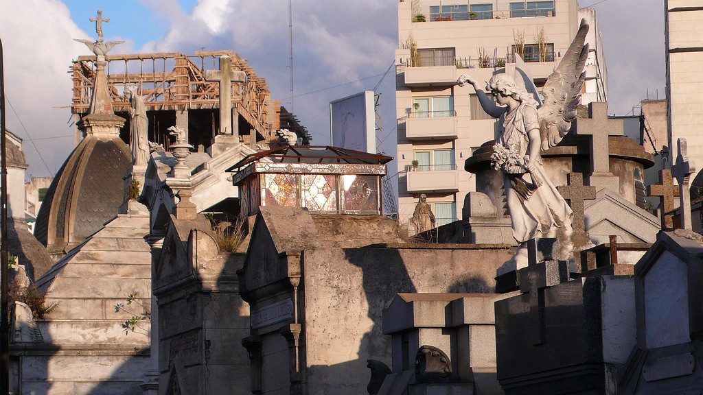
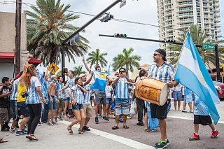
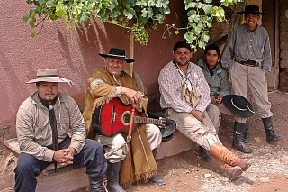

Аргентина — одна из наиболее крупных и экономически развитых стран Латинской Америки. Площадь — 2 767 000 км² (без Фолклендских, или Мальвинских, островов — спорной с Великобританией территории). Население — около 33,5 млн. человек. Большинство верующих — католики. Столица — Буэнос-Айрес. В своих современных границах страна сформировалась в XIX веке, завоевав в 1816 году независимость. В колониальный период Аргентина была одним из наиболее отсталых районов континента, так как испанцы не нашли здесь золота и других драгоценных металлов. Однако с середины XIX века плодородные равнины Аргентинской Пампы становятся крупнейшим в западном полушарии районом притяжения европейской иммиграции. Ядро аргентинской нации составляют креолы — родившиеся в Аргентине испанцы. Самой большой по численности и длительности иммиграцией была испанская и итальянская, многочисленны также французы, поляки, русские.

Благодаря разнообразию рельефа и особенностям геологического строения Аргентина располагает богатой минерально-сырьевой базой для развития промышленности. Но залежей мирового масштаба (как в других странах Латинской Америки) здесь почти нет. В западных районах имеются рудные полезные ископаемые. Страна выделяется запасами урановых, марганцевых, медных руд, бериллия; есть свинцово-цинковые, вольфрамовые и железные руды. По запасам урановых руд Аргентина входит в десятку ведущих стран мира.
Из топливно-энергетических ресурсов наибольшее значение имеют природный газ и нефть. Основные месторождения приурочены к осадочным породам в прогибах Патагонской платформы и межгорным прогибам Анд и на острове Огненная Земля. Достоверные запасы природного газа Аргентины оцениваются в 600 миллиардов кубических метров. Добыча его возросла (особенно с открытием месторождения в провинции Неукен). В Патагонии есть небольшие запасы бурых углей.
 Столица Аргентины может показать туристам как исторические архитектурные строения — старинные дома, церкви, мощеные улочки; так и современные — стеклянные небоскребы, скульптуры, построенные с размахом улицы и дороги. Сможет похвастать огромным количеством музеев, пригласить в элегантный и роскошный квартал Ла Реколета, удивить красочным районом Ла Бока, продемонстрировать самую широкую улицу мира — Авениду. Каждый город хранит свои тайны и неповторимые места.
В Аргентине огромный выбор отелей на любой вкус. Есть обычные отели, семейные, дизайнерские, танго-отели, эстериас и другие. При желании можно поселиться как в очень скромной и уютной гостинице, так и в шикарном дорогом отеле-дворце. В Буэнос-Айресе более 500 отелей, в Пуэрто Игуасу — около 60, в Эль Калафате — более 80.
Стоимость номеров аргентинских гостиниц достаточно высока в сравнении с другими латиноамериканскими странами, но на порядок ниже европейских цен.
Однокомнатная квартира в приличном районе будет стоить в пределах 400 $ в месяц. Шикарную многокомнатную квартиру (3-5 комнат) можно арендовать за 1300-1500 $ в месяц.
Каждый год в январе на территории Аргентины проходят красивейшие карнавалы, и это захватывающее зрелище длится до самого марта, радуя глаз и взор туристов каждую субботу. Аргентинский костюмированный карнавал — это яркая актерская игра и чувственные зажигательные танцы.
 А аргентинской зимой, в начале июля, всегда проходит «сладкая неделя». В эту неделю принято дарить сладости любимым, поэтому накануне по всей стране традиционно проходят распродажи сладостей со скидкой. Излюбленные конфеты в «сладкую неделю» — «bon a bon». Но, конечно же, важен не сам сладкий подарок, а внимание. Причем взамен принято обязательно благодарить поцелуем. Аргентинцы вообще любят целоваться, приходя куда-то, они обязательно сперва со всеми перездороваются, перецелуются (даже малознакомые люди, коллеги, компаньоны прижимаются друг к другу щеками) и только потом приступят к делу. И точно так же потом перецелуются, уходя.
Самый популярный вид спорта здесь — футбол. Наиболее известные аргентинские футбольные команды это «Бока Хуниорс», «Ривер Плейт», «Рейсинг Клаб», «Индипендиенте», «Сан-Лоренцо».
Не менее популярны такие виды спорта как регби, баскетбол, поло, теннис. Среди женщин популярен хоккей на траве.
Гостям Аргентина, страна активных видов спорта, предлагает множество пеших экскурсий, в том числе и бесплатных.
Таможенные правила устанавливают ряд ограничений на ввоз и вывоз. Нельзя ввозить овощи, фрукты, растения, продукты питания с коротким сроком годности (хлеб, мясо, колбаса, сыр и др.). Нельзя везти с собой более 2 литров спиртного, более 20 пачек сигарет, более 100 мл духов, более чем на 300 $ сувениров. Ввоз валюты не ограничен. Вывозить можно не более 10 000 $.
Аргентинцы — очень гостеприимная и доброжелательная нация. Они улыбчивы и всегда готовы помочь, но иногда дают обещания, которые не будут выполнять, потому что дают их сугубо из желания поддержать и ободрить человека.
Если возникнет необходимость в лечении — государственная медицина бесплатна. Одними из лучших больниц в Аргентине считаются Hospital de Urgencias (в Кордобе) и Hospital Zonal General de Agudos San Roque Manuel B. Gonnet (в Ла-Плате).
Разрешены однополые браки. Туристы-геи могут узаконить свои отношения в городе Буэнос-Айрес, а так же по всей провинции Буенос-Айрес и Санта-Фэ.